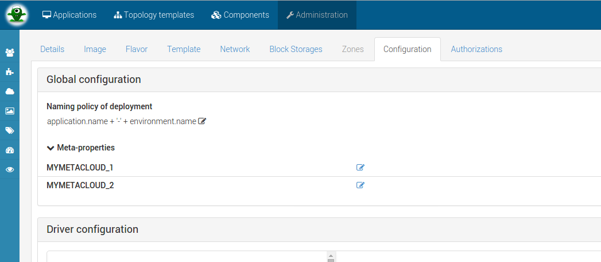

Cloud(s) management
If you are not familiar with the concept of cloud in Alien 4 Cloud please go here first.
Requirement for cloud creation
Alien 4 cloud is not responsible for actual deployment orchestration but rather interact with existing orchestration technologies. In order to define a cloud you must configure plugins that will be used to actually perform deployment(s) on the defined cloud. Orchestrator plugins are refered in alien as PaaS Provider plugins.
In order to configure a cloud you must have installed a paas provider plugin first see Plugin management.
Supported orchestrators
We are currently supporting the opensource orchestrators cloudify 2 and cloudify 3 (Full re-written engine with new DSL - much better and flexible but that we felt prior to the up-comming 3.2 a bit light for production use).
Installing Cloudify 2.7 plugin
Follow this link in order to find more on installation and configuration of your coud environment using cloudify 2.
Cloud creation
Once you have installed a plugin the admin can go on the cloud page and configure cloud. Remember that you can use the Alien 4 Cloud contextual help in order to be guided directly within the application.
Cloud global configuration

Naming policy
On every cloud, you can configure a naming policy that Alien 4 Cloud will use when deploying an application on a cloud. The naming policy will be used to identify the deployment on the cloud’s orchestrator (PaaS Provider).
Most of the PaaS Providers will leverage this naming policy to name the resources used at the IaaS level also.
To compose your own application naming policy, you can use the following entities and properties :
- environment : the environment linked to the deployment
- id
- name
- description
- environmentType :
OTHER, DEVELOPMENT, INTEGRATION_TESTS, USER_ACCEPTANCE_TESTS, PRE_PRODUCTION, PRODUCTION
- application : deployed application
- id
- name
- creationDate
- lastUpdateDate
- metaProperties[‘PROPERTY_NAME’] : meta-properties defined on the application
- time : current date at format
yyyyMMddHHmm
The default naming policy setting for any cloud is : environment.name + application.name
Deployment name unicity
The deployment name must be unique at a given time, the cloud administrator is responsible for choosing a pattern that should be unique or some application(s) may not be deployed (if a deployment with the same name is already running).
Note that in we guaranty that an application name is unique across all applications and that an environment name is unique for a given application.
However, when generating the application paaSId (final application name on the PaaS), all space character will be replaced by an _. Therefore and as an example, if your naming policy involves the application name, you can not deploy simultaneously two applications named “Test App” and “Test_App” on the same cloud, as the generated paaSId will be in conflict.
The main pattern to define a naming policy is to use + to concat different properties or text, for examples :
environment.name + application.name + timeapplication.id + environment.environmentType + '-US_ZONE'time + '__' + application.creationDate'MY_APP' + '-WORDPRESS-' + timemetaProperties['PROPERTY_NAME'] + '-' + time
Empty meta properties
Any empty property used in the naming policy expression will cause a deployment failure.
Advanced use : the policy expression is based on SpEL (Spring Expression Language) and you could use its capabilities if you are familiar with it.
Note : do not use the #
Meta properties
This feature allows you to define meta-properties on your cloud and then use them in your topology as an internal variable defined by your administrator. Obviously as a CLOUD_DELOYER, APPLICATION_USER or APPLICATION_MANAGER you won’t be able to change this value.
At this stage, we assume that you’ve read the tutorial part
In global configuration in the meta-properties part you should be able to define a value for any cloud targeted meta-properties. Fill the desired values in order to use it later as in get_input for a property.
Regarding your meta-property definition, you can add constraint on a meta property. In this case you must see constraint violation error if any in this cloud meta-properties form.
PaaS Provider configuration
TODO
The configuration tab on the cloud view allows to setup the provider specific configuration. It is mostly used to configure the provider connexion parameters so Alien 4 Cloud can communicate with the orchestrator engine server.
This configuration may be specific to the orchestrator used and you should refer to the orchestrator specific guide.
Cloud resources setup
TODO
Once created you must configure the cloud. Configuring a cloud requires several step:
- Configure the properties of the PaaS provider (that depends of the choosen one).
- Configure cloud resources (images and flavors) used for resources matchin at deployment time.